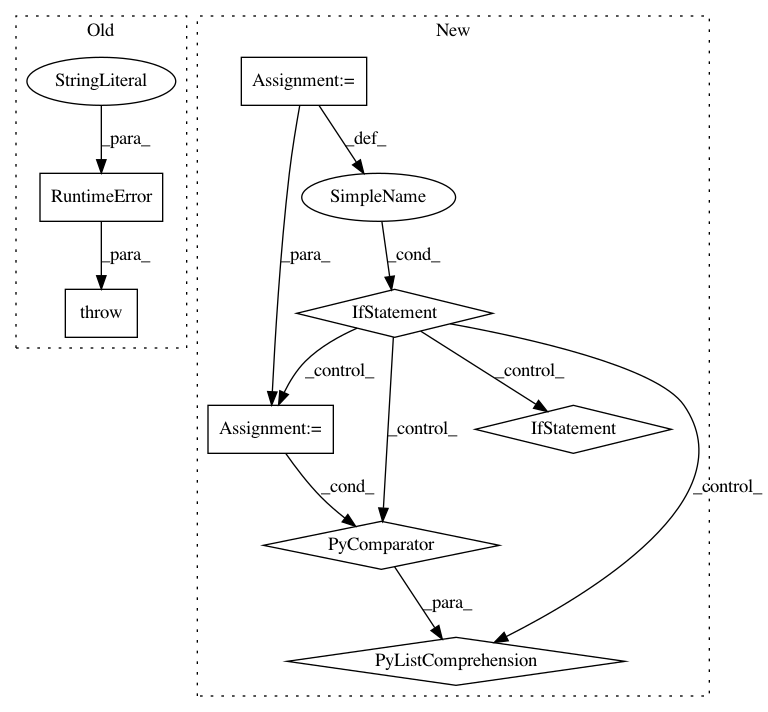

2ab73c85eee57d710227eabcb5c5e37fb6d6bc52,mmcv/video/io.py,VideoReader,__getitem__,#VideoReader#Any#,241
Before Change
def __getitem__(self, index):
if isinstance(index, slice):
raise RuntimeError("slice has not been supported yet")
return self.get_frame(index)
def __iter__(self):
self._set_real_position(0)
After Change
return self.frame_cnt
def __getitem__(self, index):
if isinstance(index, slice):
return [self.get_frame(i) for i in range(*index.indices(self.frame_cnt))]
return self.get_frame(index)
def __iter__(self):
self._set_real_position(0)
In pattern: SUPERPATTERN
Frequency: 3
Non-data size: 8
Instances
Project Name: open-mmlab/mmcv
Commit Name: 2ab73c85eee57d710227eabcb5c5e37fb6d6bc52
Time: 2018-09-26
Author: xiongyuxy@gmail.com
File Name: mmcv/video/io.py
Class Name: VideoReader
Method Name: __getitem__
Project Name: vatlab/SoS
Commit Name: 6f9d9f18865ac204c93c61029ec9efb129869709
Time: 2017-03-03
Author: ben.bog@gmail.com
File Name: sos/sos_step.py
Class Name: Base_Step_Executor
Method Name: expand_input_files
Project Name: vatlab/SoS
Commit Name: 6f9d9f18865ac204c93c61029ec9efb129869709
Time: 2017-03-03
Author: ben.bog@gmail.com
File Name: sos/sos_step.py
Class Name: Base_Step_Executor
Method Name: expand_depends_files